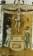
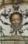
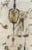
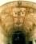

| |
(…) Profondamente omogenei, a livello informale, appaiono, difatti gli affreschi del castello, dove sono riconoscibili almeno due competenze decorative diverse, ora già individuate nelle due varietà di grottesche dipinte dell'androne, tuttavia eseguite in profonda sintonia. La bottega operosa di Zivido poteva essere una di quelle allora costituite da famiglie intere di artisti, spesso itineranti, i quali si scambiavano cartoni e modelli.
Forse anche così si può spiegare quel carattere arcaicizzante che traspare in diversi particolari decorativi delle grottesche, ispirato a Roma, piuttosto che all'area lombarda: tali, infatti, appaiono citazioni come i profili di mostri, o i cavallini assimilabili ad unicorni, nonchè, nel pannello dell'androne verso il borgo, i dischi circolari, contanenti figurette igude intere.
A questo proposito, si può altresì osservare come anche le grottesche nel castello di Zivido - specie quelle con scene di caccia e pesca, nell'androne - sembrino seguire, quasi letteralmente e in modo forse non del tutto casuale, la nota descrizione che, sul genere, il Vasari aveva già offerto nell'introduzione alle sue celeberrime "Vite", sin dalla metà del Cinquecento.
"Le grottesche sono una spezie di pitture licenziose e ridicole molto, fatte dagli antichi per ornamenti di vani, dove in alcuni luoghi non stava bene altro che cose in aria: per il che facevano in quelle tutte sconciature di mostri, per strettezza della natura, e per gricciolo e ghiribizzo degli artefici; i quali fanno in quelle, cose senza alcuna regole, appiccando a un sottilissimo filo un peso che non si può regere, ad un cavallo le gambe di foglie, e ad un uomo le gambe di gru, ed infiniti sciarpelloni e passerotti; e chi più stranamente se gl'immaginava, quello era tenuto più valente".
Gli affreschi di Zivido possono, cioè, essere datati ad anni non lontani dal documento del 1575, dagli studiosi riferito al castello di Zivido, ma non molto più tardi, data l'assenza di quei riferimenti simbolici, allegorici nonchè allusivi al luogo che caratterizzeranno gli esempi di grottesche seguenti quel periodo.
Verosimilmente affrescate in piena età della Controriforma, anche le grottesche nel castello di Zivido stanno a confermare quella lontananza - quanto voluta? come non mancano di interrogarsi gli studiosi - dai dettami allora vigenti, altresì riscontrabile, ugualmente in quell'epoca, nell'iconografia di non pochi dipinti dislocati nella campagna, lontano dal centro cittadino. E', in particolare, nell'androne, sulla lesena affrescata a sostegno dell'arco di snodo, che una rappresentazione come quella della donna nuda a gambe aperte , o, su una delle lunette, dell'ignudo con tiara papale che insegue con un bastone un essere bizzarro, sembra contrapporsi a quanto S.Carlo indicava nelle Instructiones del 1577, sia pur rivolgendosi alle immagini nelle chiese:
"... non si deve esprimere cosa che sia falsa, o incerta, o apocrifa, o superstiziosa, o strana, così si eviterà tutto ciò che sappia di profano, di turpe o di osceno, o di semplicemente procace, così pure si eviterà ciò che presenti tale curiosità che invece di eccitare la divozione dei fedeli li distragga o li conturbi".
Come accennato, addirittura ala venerazione di divinità pagane appaiono dedicate le scenette affrescate nei riquadri centrali, in anni credibilmente non lontani da quando, a spese della medesima famiglia proprietaria, sarà sistemata anche la parrocchiale del medesimo borgo, ristrutturata, come rilevato, in piena conformità ai dettami lasciati dall'arcivescovo Borromeo.
E' da chiedersi se, nella vasta volta dell'androne, il fitto ornato dipinto sottintenda un programma di tipo iconografico, o se, invece, abbia carattere puramente ecorativo. Se nei due ampi riquadri principali appaiono molteplici notazioni figurative inerenti alla pesca - quali navi, forse in relazione agli affreschi sulla scaletta - alla caccia allude, invece, la serie di scenette fantastiche sui pennacchi triangolari verso la corte grande: ossia, occupazioni evidentemente tipiche alla vita che allora si conduceva anche in quella campagna, cui possono ugualmente alludere, in termini generali, le altre rappresentazioni qui ricordate, dai due paesaggi nel mezzo (maggiore quello verso la corte grande) ai quattro venti (in direzione del borgo), dall'adorazione a divinità pagane alle ghirlande di frutta.
In un contesto figurativo ed ornamentale che, come suggerisce l'arch. Vincenti, può essere avvicinato anche al non lontano castello di Peschiera Borromeo, è impossibile dire se a persone reali si riferiscano i medaglioni con ritratti, appesi agli angoli dei medesimi riquadri: lo stesso vale, tra i lacerti di affreschi appena visibili sulla facciate verso la corte maggiore, per le rappresentazioni, ora lacunose, forse di giovani, affacciati dalle persiane socchiuse di finte finestre, dipinte in modo speculare, sia accanto a quelle reali della triplice loggetta, sia all'angolo con il corpo di fabbrica perpendicolare.
il considerare lo stato di rovina in cui si trovano questi ultimi dipinti, è purtroppo, come detto, valutazione estensibile alla maggioranza degli affreschi nel castello, nonchè alle medesime strutture architettoniche, in varie zone notevolmente degradate. Grande è, infatti, il rischio di perdere, oltre a quanto si è già smarrito, con la rovina del castello di Zivido, anche 'espressione di un gusto, da parte di una famiglia - i Brivio - di cui sono documentati gli interessi artistici: non solo, infatti, proprio nella chiesetta del borgo di Zivido, ne era menzionata la commissione di una pala d'altare a un maestro quale il Bergognone, ma è inedito l'elenco della loro importantissima collezione milanese, che comprendeva, nel Settecento, anche dipinti riferiti a Leonardo, Bernardino Luini e Gaudenzio Ferrari.
Se, evidentemente, per la ricostruzione e la decorazione del loro castello in Zivido, gli stessi proprietari si rivolsero a maestri locali, di cui sono sconosciuti sia i nomi che i tempi operativi esatti, non si può negare, in questa medesima fabbrica, la presenza di un filo conduttore che, come qui accennato, si svolse anche in altri cantieri della zona, almeno sin verso la metà del Cinquecento.
Il castello di Zivido, infatti, come la chiesetta di Rossate e la palazzina di Gardino, il castello di Melegnano e, forse in modo già ancor più significativo, la perduta fabbrica di Santa Maria della Vittoria - credibilmente la più prestigiosa fra tutte, data l'importante committenza reale - sono altresì da studiarsi come elaborazioni condizionate dalle effettive realtà locali, nella loro complessità geografica, politica, economica, religiosa.
Già sperdute nella campagna e ora inserite in un contesto ambientale spesso contradditorio, queste opere documentano le richieste di una committenza tendenzialmente conservatrice, nonchè la tenace persistenza di tradizioni locali - oggi riconosciute, soprattutto, in quelle architettoniche - profondamente radicate, come confermerebbero reciproci raffronti, e, verosimilmente, la presenza di stessi maestri operosi in cantieri diversi. Nel caso del castello di Zivido, è possibile riconoscerne relazioni con la tradizione artistica quasi solo in termini architettonici, dal momento che diversi dipinti sono in stato di rovina, come "l'Annunciazione" del pianterreno: a carattere devozionale, quindi iconograficamente distaccata dagli altri affreschi - ma, almeno, tra la fine del Seicento e lungo il Seetecento, si poteva celebrare messa anche in castello - questa composizione poteva, infatti, riproporre forme tradizionali, già collaudate, in particolare, nella vicina chiesetta di S:Maria della Natività.
(di G.B.Sannazzaro da "Zivido, mille anni di storia. Dall'alto medioevo alla battaglia dei giganti", pp.173-180, Associazione Culturale Zivido, 1994) |
|
 |
|




|


{kind=link}
{kind=link}
{kind=link}
{kind=link}
{kind=link}
{kind=link}
{kind=link}
{kind=link}
{kind=link}
{kind=link}
{kind=link}
{kind=link}